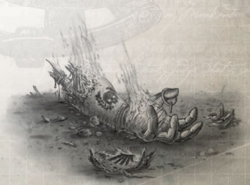
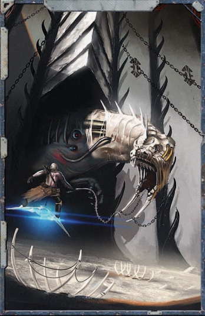

竞技坑存在的唯一目的便是流血和杀戮，为黑暗灵族施虐狂式的滋养服务。为盟友提供娱乐只是这一可怕目标的附带产物。每一天，在影脊竞技坑的竞技场中都会举行连续不断的比赛和游戏。有些是为了展示奴隶的战斗高超技艺或野兽的凶残而组织，有些可能是为了给来访的异形提供消遣，让他们可以在这血腥的娱乐中下注，又或者是为了让黑暗灵族汲取斗士的痛苦。源源不断的奴隶涌入阴影枢纽，唯一的目的便是在竞技坑中受苦，这座城市的经济和存在意义在很大程度上依赖于这些奴隶的存在，使其成为众多来访黑暗灵族前哨站的交易和会面的中心。探险者们在刚抵达时可能也曾参观过竞技坑，坐在竞技场中观看那些残酷的游戏。如果是这样，这与他们现在的处境形成了鲜明对比，他们从尖刺环围的坑底向上望去，看到的是邪笑的观众脸孔正期待着他们的痛苦。

探险者作为枯刃斗教奴隶的大部分时间都被竞技场中的比赛所占据。他们可能面对的对手、危险和敌人种类繁多，主持人可以为玩家呈现多样的选择，以保持战斗对角色来说既有趣又具有挑战性。由于探险者必须通过获取好感度来获得武器、盟友和信息，然后才能逃脱，因此他们在重获自由之前很可能需要多次进入竞技坑。有些比赛可能是短暂而凶残的对决，只有一个对手和少量额外挑战或危险。另一些则可能相当复杂，涉及危险的环境、多个敌人和精心设计的胜利条件。主持人应尝试将这些混合起来，给玩家角色提供不同的障碍，并让团队中的每个成员都有机会发光，而不仅仅是那些擅长战斗的人。组织一场战斗
当探险者首次被俘并与多莫斯会面时，这位技术贤者应向他们明确表示，为了逃脱他们需要获得好感度，以便获得挣脱自由的手段。其中一部分是通过完成竞技场中的战斗来实现的，这会引起枯刃斗教和观众的注意，并让玩家角色作为角斗士获得更多特权。虽然某场战斗的性质不在探险者的直接控制范围内（因为它由主持人决定），但如果他们愿意，可以通过社交互动、消耗好感度或两者兼而有之来以某种方式影响它。主持人应创建一些固定的战斗，可以使用下面的表格随机生成，也可以根据探险者的能力为基础来设计。在战斗开始之前，主持人可以允许探险者进行一些诡计来将结果转向对他们有利的方向。他们可以尝试左右黑暗灵族的决定，或通过潜行秘密改变它们（篡改记录或调换兽笼中的野兽等）。此类活动应需要适当的技能检定（探险者可以进行魅力技能检定来说服尤纳兰换一种对战方式更刺激，或进行巧手技能检定来重新排列签号而不被发现），失败会有合乎逻辑的后果。在此类检定中成功，允许探险者在表2-3“竞技场敌人”或表2-6“竞技场险情”上重掷。
无论探险者是否操纵了竞技场战斗的组成，竞技坑中的一场战斗通常有两个主要元素：探险者必须面对的敌人，以及竞技场本身呈现的危险。黑暗灵族扔给探险者的敌人来自广泛的来源，包括其他奴隶、被捕获的野兽、机器以及黑暗灵族战士如巫灵。在黑暗灵族眼中，这些战斗不存在公平的概念或什么精心的设计，因为他们不记分。虽然其他异形可能会对结果下注，黑暗灵族偶尔也会参与此类活动，但他们对谁赢谁死很大程度上不感兴趣，只要有人受苦就行。黑暗灵族举办比赛的理由有一种可怕的纯粹性：他们施虐式地需要目睹角斗士所施加的痛苦和自身遭受的痛苦。因此，枯刃斗教在选择对手时会考虑到这一点。不过，很多时候选择过程是随机的，只要战斗持续足够长的时间，双方都遭受创伤并流血，黑暗灵族便会感到满意。
竞技场的危险是黑暗灵族进一步增加竞技场屠杀和延长斗士痛苦的一种方式。所有的危险无一例外都是为了增加斗士的困难或危险，迫使他们像应对对手一样应对环境。这可能包括大量可怕的装置，如尖刺坑和陷坑、充能力场、火墙、旋转的链锤和长矛陷阱。黑暗灵族还喜欢改变竞技坑的环境性质以使战斗更致命，例如加入齐膝深的水、操纵重力（通过盖兰天球的古老机制）或用燃烧的腐蚀性沙子覆盖地面。
敌人
当主持人想要创建一场竞技场战斗遭遇时，他可以在表2-3“竞技场敌人”上掷骰，或从下面的敌人群体中选择。如果他想让战斗更具挑战性，可以增加探险者必须面对的选定敌人的数量。主持人也可以让探险者面对多个敌人，在表上掷两次并将两个结果都应用于战斗。与多种类型敌人战斗会显著增加战斗的难度，不过更大规模的战斗也可能变成三方混战，因为敌人在与探险者战斗的同时也会互相攻击。想要挑战探险者的主持人甚至可以在表2-3“竞技场敌人”上掷多次并增加此类敌人的数量，不过这可能会很快让玩家角色不堪重负，也给主持人带来更多工作量。另外，如果主持人想让战斗更容易一些，他可以派NPC盟友与探险者一同进入竞技坑，以协助他们或作为更致命敌人的炮灰。
表2—3：竞技场敌人
| 1d10掷骰 | 敌人 |
|---|---|
| 1 | NPC对手 |
| 2–3 | 黑暗灵族巫灵 |
| 4–5 | 野兽对手 |
| 6–7 | 异形对手 |
| 8–9 | 竞技坑苦役 |
| 10 | 玩家角色对手 |
异星对手
人类奴隶和黑暗灵族巫灵并非探险者在竞技场中可能遇到的唯一有知觉对手。虽然罕见，但探险者可能面对各种异形战士，其中最常见的是兽人（在科洛努斯扩区内及其周边有大量兽人），但也可能包括扩区的任何异形。通常情况下，如果探险者等级为4或更低，则每名探险者对应一名异形战士；如果等级高于4，则每名探险者对应两名战士。或者，如果探险者等级为4或更高，异形可能被允许保留其原有装备，而探险者仅配备原始武器或近战武器以及他们的聪明才智。
探险者可能遇到的各种异形的属性表，以及他们可能使用的武器，可以在本扩展书或《行商浪人》核心规则书第364页第十四章“对手与异形”中找到。
野兽对手
黑暗灵族为他们的竞技场战斗捕获了大量野兽，不惜代价活捉凶残致命的生物，以便让它们互相厮杀、与他们的奴隶搏斗。阴影枢纽的中心位置以及众多商人和旅行者的往来，意味着影脊竞技坑中汇聚了来自扩区及其他地方的种类繁多的野兽。安雅拉的兽笼中通常装满了奇异的恶魔，主持人可以让黑暗灵族放出几乎任何可以想象的生物来面对探险者，在他们站在坑中紧张地盯着重力门，猜测着将会出现什么新的恐怖时，这增加了悬念。
主持人可以在表2-4“释放野兽”上掷骰，或者，如果主持人拥有其他包含野兽的《行商浪人》书籍，例如《科洛努斯异形手册》，他可以使用这些作为替代怪物的来源。
表2—4：释放野兽
| 1d10掷骰 | 敌人 |
|---|---|
| 1–2 | 每名探险者对应一只奇美拉（每有一位等级5或更高的探险者，额外增加一只奇美拉）。 |
| 3–4 | 每名探险者对应一只阿里阿德涅螺旋蛛（每有一位等级5或更高的探险者，额外增加一只阿里阿德涅螺旋蛛）。 |
| 5–6 | 每名探险者对应一只剃刀翼（每有一位等级5或更高的探险者，额外增加一只剃刀翼）。 |
| 7 | 每名探险者对应一名时计角斗士（每有一位等级5或更高的探险者，额外增加一名时计角斗士）。 |
| 8 | 每名探险者对应一台屠魔机仆（每有一位等级5或更高的探险者，额外增加一台屠魔机仆）。 |
| 9 | 每名探险者对应一只利爪魔（如果任何探险者等级为5或更高，额外增加一只利爪魔）。 |
| 10 | 每名探险者对应一只血肉龙兽（如果任何探险者等级为5或更高，额外增加一只血肉龙兽）。 |
黑暗灵族巫灵
黑暗灵族不满足于仅仅旁观，他们常常亲自参与自己的竞技场战斗。枯刃斗教的巫灵是技艺极其精湛的杀手，他们在竞技坑中磨练技艺。因此，对抗黑暗灵族的战斗始终应是困难的，因为探险者人数处于劣势且装备简陋。然而，这些战斗并非无法克服。尽管黑暗灵族喜欢屠杀，他们也喜欢看到他们的奴隶上演一场血与死亡的好戏，他们接受自己必须在竞技坑的熔炉中淘汰最弱的成员。在创建对抗黑暗灵族的比赛时，主持人可以从“枢纽居民”中出现的各种黑暗灵族中选择。对手群体应随每场战斗而变化，连同竞技场险情一起，为探险者创造有趣且多样化的挑战。如果主持人不想自己创建黑暗灵族群体，他可以在表2-5“黑暗灵族对手”上掷骰来为探险者生成敌人群体。
表2—5：黑暗灵族对手
| 1d10掷骰 | 敌人 |
|---|---|
| 1–2 | 每名探险者对应一名血新娘和一名巫灵（或每名等级5或更高的探险者对应一名血新娘）。 |
| 3–4 | 每名探险者对应一名骑乘滑板的巫灵（每有一位等级5或更高的探险者，额外增加一名骑乘滑板的巫灵）。 |
| 5–6 | 一名野兽大师，带一只剃刀翼和一只奇美拉（如果任何探险者等级为5或更高，额外增加一只利爪魔）。 |
| 7 | 每两名探险者（向上取整）对应一名骑乘劫掠者喷气摩托的血新娘（如果任何探险者等级为5或更高，则每名探险者对应一名骑乘喷气摩托的血新娘）。 |
| 8 | 每两名探险者（向上取整）对应一名巫灵和一只怪形（如果任何探险者等级为5或更高，额外增加两只怪形）。 |
| 9 | 一只血肉龙兽（每有一位等级5或更高的探险者，额外增加一名野兽大师）。 |
| 10 | 一台克罗诺斯寄生引擎（每有一位等级5或更高的探险者，额外增加一名巫灵）。 |
NPC对手
探险者中至少有一人很可能要面对枯刃斗教奴隶围栏中的其他奴隶角斗士。主持人可以利用这些战斗来清算旧账（让玩家角色有机会杀死那些妨碍他们逃脱的NPC），或者作为黑暗灵族和其他奴隶阴谋的一部分（嫉妒或怀恨在心的NPC，或狡猾的黑暗灵族可能让他们与新结交的盟友对战）。不过，这些战斗不必致死，探险者可以和多莫斯制定计划，在此类战斗后复活或修复NPC。无论探险者是否愿意与被安排对战的NPC战斗，这都可能成为他们经历的最危险的决斗，因为许多NPC拥有与他们不相上下的技能。在选择NPC与玩家角色交战时，主持人应考虑探险者的逃脱计划、他们已与其他奴隶建立的联盟，以及他们是否在枯刃斗教内部树敌，这些敌人可能会暗中破坏他们。大多数NPC都应伴有若干合适的无名NPC，不过像卢德沃斯·塔恩这样的强者很可能无需帮助就能面对大多数探险者团队。关于枯刃斗教每位主要NPC俘虏的技能和战斗风格的详情，见上文“血中兄弟”部分。

玩家角色对手
正如探险者可能在竞技场中面对NPC一样，他们也可能发现自己被扔到一起，为黑暗灵族的娱乐而互相厮杀。这类战斗对玩家和主持人来说都很有趣，因为它让他们有机会在不破坏团队稳定的情况下测试角色之间的技能。这类战斗应是一对一的，以免混淆或导致探险者互相围攻，因为这可能轻易导致团队动态的危险失衡。玩家角色可以自行决定是要真正尝试杀死对方，还是仅仅做做样子来安抚黑暗灵族。如果是后者，倘若玩家角色确实能够合作并利用各自的能力“上演”一场令人印象深刻的战斗而不需要任何一方死亡，主持人应奖励他们额外一点好感度。然而，即使两人协调合作以共同活过战斗，仍然需要流血并造成一定程度的痛苦。
竞技坑苦役
影脊竞技坑中有成千上万的奴隶处于枯刃斗教的控制之下，虽然大多数人不配称为角斗士，但他们仍然被送到竞技场，死在出色战士和狂怒野兽的手中。探险者可能会发现自己面对这样一群竞技坑奴隶，他们被给予基础的武器，被派来对抗探险者，这几乎肯定是一场屠杀。大多数竞技坑奴隶是人类，在掠袭中从科洛努斯扩区内的世界或卡利西斯星区边缘被捕获，甚至可能来自探险者家乡世界或舰船成员中。这些战斗不太可能给探险者带来太大的挑战，但如果他们不得不射杀和砍倒数十名同类，可能会让他们质疑这次征程的代价。为了让与竞技坑苦役的遭遇更具挑战性，主持人可以在他们中间藏匿几名时计角斗士。虽然这些可怕的战士远比他们周围那些可怜虫强大，但他们的实力很可能在一切为时已晚之前都不会显现。竞技坑苦役也可以在与探险者并肩作战时使用，用以对抗竞技场中一些更大更凶残的生物，让主持人在释放怪物的全部愤怒之前，先用数十具尖叫人类的新鲜尸体向探险者展示“怪物是如何运作的”。
主持人可以使用斗教群奴属性表（痛苦灵族、残暴钛族火战士、受折磨人类）。大多数等级为4或更低的探险者团队应能应对每名探险者对应一到两个这种可怜虫，而等级为5或更高的团队可以应对更大规模的群体，尤其是如果他们拥有任何类型的远程武器的话。当然，射杀竞技坑苦役很难说是一种挑战，而且这种命运对黑暗灵族的品味来说过于仁慈了。
角斗士武器与护甲
探险者可以带入竞技场的武器、护甲和装备由主持人决定，不过他应允许他们通过消耗好感度来影响自己的装备。至少在最初的几场战斗中，他们只能使用黑暗灵族选择给他们的东西，通常是在对人类和异形世界的掠袭中缴获的武器残次品。这几乎可以是任何东西，从制作粗糙、弹药生锈的自动枪和由废金属打制成的刀具，到神秘的异形利刃和古老但运作不良的等离子枪。主持人应记住，黑暗灵族希望在竞技场战斗中看到尽可能多的杀戮场面，因此通常会限制过于强大或能迅速杀死敌人的武器。他们更倾向于使用能造成创伤或需要多次攻击才能杀死的武器。他们也更倾向于给战斗人员配备近战武器和原始武器，而非枪械和先进火器，以延长杀戮过程并确保尽可能多地流血。
护甲也常常受到限制，因为它的存在是为了减少战斗中的流血量。虽然探险者可以利用好感度获得一些基本的防护，但黑暗灵族很可能只让他们穿着身上的衣服就进入竞技场。狡猾且善于把握机会的探险者可能能够从倒下的敌人身上搜刮、制作或偷取更好的护甲，而黑暗灵族通常允许奴隶保留一定数量的个性化护甲，尽管他们在奴隶离开竞技场时会没收他们能找到的任何武器。
除了消耗好感度为战斗获得更好的武器和护甲之外，探险者也可以选择放弃任何给予他们的远程武器，转而选择近战武器，从而为他们黑暗的主人提供更好的表演，并获得更多好感度（如上所述）以帮助逃脱。此外，主持人可以利用获得（或无法获得）更强大武器和护甲的机会来调节探险者在竞技坑中遭遇的难度。
竞技场险情
除了为探险者选择一个或多个对手之外，主持人还可以创建竞技场环境。虽然并非每个竞技场都必须有险情，有些战斗可以在竞技坑底部简单的钢铁和沙地上进行，但使用险情能让战斗更加难忘，并在玩家角色逐渐获得逃脱所需的好感度时保持战斗的趣味性。主持人可以在表2-6“竞技场险情”上掷骰，或从下面呈现的结果中选择一个。竞技场险情会影响整个竞技场，并如条目中所述阻碍玩家角色和他们的敌人，通常是无差别的。主持人也可以像添加多个敌人一样，向竞技场添加多种险情。然而，与敌人不同的是，险情的效果相对可预测，虽然它们在某些方面增加了战斗的难度，但它们也为探险者创造了新的机会，可能使战胜压倒性的敌人成为可能。有些险情被设计成可以协同作用，组合时能产生有趣的效果。黑暗灵族很清楚这一事实，并乐于加以利用。各个条目的描述中会说明组合险情的效果。
表2—6：竞技场险情
| 1d10掷骰 | 险情 |
|---|---|
| 1 | 燃烧之沙 |
| 2 | 夜幕斗篷 |
| 3 | 龙息 |
| 4 | 重力波动 |
| 5 | 闪电力场 |
| 6 | 液体险情 |
| 7 | 阴影迷宫 |
| 8 | 废料场 |
| 9 | 天降 |
| 10 | 尖刺与利刃 |
燃烧之沙
枯刃斗教使用的大部分战斗坑的地面是冰冷的、染有污渍的钢铁，上面覆盖着泥沙，用以掩盖盖兰天球隐藏机构纵横交错的褶皱和舱门，这些机构可以开合以通往更深处的竖井，通向这个人造世界的核心。有时，为了让角斗士之间的战斗更有趣，黑暗灵族会在竞技坑中撒布油脂和化学物质，它们会缓慢地腐烂、灼烧或熔穿角斗士的双脚，迫使他们更快地击倒敌人，否则便会在痛苦的折磨中死去。与沙土混合后，这些化学物质很难被察觉，直到角斗士闻到靴子（或脚底）灼烧的气味。带有燃烧之沙险情的竞技场（或部分区域，取决于黑暗灵族的心情）对行走有腐蚀作用，无论是因为高温还是某些有毒成分会侵蚀战斗人员的靴子。在燃烧之沙区域连续战斗两轮后，战斗人员必须进行一次挑战（+0）的坚韧检定，否则其与灼热沙地接触的任何身体部位受到1点能量伤害，护甲和坚韧不能减免。穿着装甲靴子（即腿部有护甲点数）的战斗人员每有1点护甲点数便获得+10加值，但即使通过检定，其腿部的护甲也会损失1点。再经过两轮战斗（进入该区域后四轮），由于战斗人员的鞋具已被灼热高温或化学物质烧毁，检定变为极难（–30）的坚韧检定。被击倒在燃烧之沙区域上的战斗人员必须立即进行坚韧检定，否则受到1d5点能量伤害，护甲和坚韧不能减免，并且全身所有部位的护甲各损失1点。如果燃烧之沙是散布在基本正常的竞技场中的若干区域，战斗人员可以进行一次极难（–30）的感知检定来判断特定区域是否具有腐蚀性（如果探险者已站在该区域中，则此检定变为普通（+20））。
燃烧之沙与液体险情不能同时生效（液体会熄灭沙中的化学物质），但与重力波动或天降结合时，会使空气中充满腐蚀性尘埃云，使竞技场的部分区域变得极度危险（进入这些云区域的战斗人员在该轮视为在燃烧之沙中被击倒）。主持人可以让这些尘埃云保持静止，为玩家角色标出位置，或者让它们移动，每轮随机判定是否有尘埃云降临到某位探险者身上（可通过随机选择一名战斗人员，然后允许他进行闪避检定来避免尘埃云）。
夜幕斗篷
被夜幕斗篷覆盖的竞技场一片漆黑或被阴影笼罩，实际上几乎无法看见任何东西。将竞技场视为完全黑暗区域（见《行商浪人》核心规则书第247页和第268页），并承受这些条件带来的所有减值和危险。在这些情况下，声音和气味对探险者变得更加重要，他们必须缓慢而谨慎地移动以寻找敌人，然后盲目地攻击，希望能命中关键一击。如果黑暗灵族让探险者面对具有黑暗视觉特性的生物，或者拥有异星装置能穿透阴影力场墨黑帷幕的黑暗灵族，这种险情可能变得更加致命。
夜幕斗篷可以与大多数其他险情很好地配合，尤其是龙息或闪电力场，因为火焰和电能的释放可以提供短暂的照明，同时也会带来危险。尖刺与利刃与夜幕斗篷结合时也极其危险，因为陷阱和陷坑变得更加难以察觉，发现或闪避其攻击的检定承受-30减值。夜幕斗篷完全覆盖了阴影迷宫的效果，因为没有人能看见它所创造的幽暗路径。
龙息
盖兰天球内部有无数隧道、管道和导管，全部为其巨大的机器和设备供能。其中一些已被黑暗灵族改造，将其致命内容物喷入战斗坑。龙息便是这样一种险情，虽然它通常以火柱的形式出现，但也可以代表酸液流、有毒淤泥或滚烫蒸汽。在战斗人员采取行动之前的每一轮，这些开口之一都有机会将其致命的气息喷入竞技场，影响直径为2d10米的随机区域（主持人可以使用《行商浪人》核心规则书第248页的散布表，以竞技场中心为起点来确定此位置）。受影响区域内的战斗人员可以进行闪避检定以避免火焰、污泥、蒸汽或酸液的喷发，从而避免伤害。失败者受到2d10点能量伤害，并根据排放物的性质，有可能被点燃。更复杂的是，探险者和他们的对手可以尝试利用龙息的排气口为己所用。战斗人员可以进行一次挑战（+0）的逻辑或技术应用检定来尝试预测下一轮致命喷射柱将从何而来（成功检定后，在检定进行时掷骰确定随机目标和大小），并采用机动动作（见《行商浪人》核心规则书第241页）将对手推入这些危险区域。
龙息可以与大多数其他竞技场险情配合使用，甚至与液体险情一起，它可以表现为从下方喷涌而出的蒸汽间歇泉。与废料场险情结合时，探险者可以利用竞技场中的大量残骸来堵塞排气口并保护该区域。这需要一个全动作和一次普通（+10）的力量检定。如果龙息随后从他们所在区域喷出，废物会堵塞端口，阻止排放。
重力波动
影脊竞技坑最初设计用于将小行星和其他太空碎片导入天球聚变核心的通道。为了帮助捕获和运输这些材料，每个竞技坑都环绕着重力鱼叉和悬停力场，以便其古老的建造者可以操纵物体在运输过程中的运动，将其熔化为燃料和建筑材料。虽然竞技坑中的大部分机器目前已停止运转或被黑暗灵族停用，但这些异星人仍然会在某些战斗中使用悬停力场。这使他们能够改变竞技坑内的重力，增加重力以压垮战斗人员并使他们难以举起武器，或减少重力使角斗士能够大步跃过竞技场，或确保武器的后坐力将他们向后抛出。在战斗开始时，主持人可以选择让黑暗灵族在战斗期间将重力设置为高或低，或者每轮主持人可以随机决定是保持不变还是切换。关于不同重力如何影响探险者及其对手的详情，见《行商浪人》核心规则书第269页的“重力效果”。
重力波动可以与大多数其他险情配合使用而不影响其功能，尽管它可能产生一些不寻常的效果，例如在液体险情中形成悬浮的液体球体，片刻后以飓风般的力量砸落，或导致尖刺与利刃中的长矛和箭矢飞行距离缩短或延长。与废料场险情结合使用时，如果重力从高切换为低或反之，可能导致废料移动，探险者可能会发现自己在新形成的射击通道中慌忙躲藏，因为掩体漂浮移动，或者在成堆扭曲金属突然倒塌时被迫闪避。
闪电力场
黑暗灵族与其方舟灵族亲族一样，在力场技术的制造和操作方面极其精湛，能够以很少有人类甚至梦想拥有的精巧和细腻来操纵能量。他们用来将竞技场笼罩在黑暗中的力场便是这种掌握的一个例子，但他们也可以用它来创建竞技场中充满电能的区域。这些区域由弧光照明，表现为竞技场地面上的棋盘状形状，定期移动和变化，迫使角斗士不断随之移动，以免被致命的电荷击中。主持人应将竞技场划分为网格或类似的一组形状，编号为1到10。在每轮开始时，他应掷1d10三次。主持人掷出的每个数字都会导致网格的相应区域激活。例如，如果主持人掷出3、5和7，则具有这些数字的方格激活（重复掷骰作废）。电荷实际上是可以看到移动的，因此如果角斗士能够成功通过挑战（+0）的闪避检定并且离受影响区域的边缘足够近，他们便有机会避开。被闪电力场击中的战斗人员受到2d10点能量伤害，并具有震击品质。
闪电力场与液体险情结合时尤其致命，因为许多种类的液体导电并将其传播到更广的区域。在这种情况下，整个竞技场都受到闪电力场的影响，但其伤害降低为1d10点能量伤害，并具有震击品质。水的存在的另一个轻微优势是，如果战斗人员能以某种方式升到水面以上（例如站在一具大尸体或来自废料场险情的残骸上，前提是它不导电），即使他处于力场出现的区域，也不会受到其影响，水会在他下方消散噼啪作响的能量。
液体险情
在竞技坑中灌满液体，无论是水还是其他类似流体，是黑暗灵族的另一种常用手段。齐膝或齐腰深的水会阻碍行动，使冲锋和奔跑无法进行。同时也会为水中的生物提供隐蔽。水还会带来溺水的危险，如果探险者或他们的对手愿意，可以利用这一点来对付对方。主持人可以选择让液体为浅水（此时视为危险环境，见《行商浪人》核心规则书第266页表9-32“穿越危险环境的敏捷调整值”），或者齐腰或齐胸深的水（此时可以使用《行商浪人》核心规则书第267页的游泳规则）。如果是深水，则很可能有岛屿（可能是废料场中的废料堆成的尖峰），角斗士可以在那里试图防御，不过随着战斗的进行，水位可能会上升，尤其是如果角斗士必须与某种水生恐怖生物战斗时，他们站在自己的岛屿上，看着那生物的尖牙和触手越来越近。主持人也可以让水本身带有危险，无论深浅，它可以代表污水、腐烂的尸体或有毒的化学物质。除了正常规则之外，带有这种令人不适的附加物的液体险情会使所有攻击视为具有毒素品质，因为伤口会被其污秽的液体灼烧。
要营造真正超现实的遭遇，主持人可以将液体险情与天降结合，在竞技坑周围形成晃动摇摆的水球漩涡。探险者必须从一侧飞或游到另一侧，而某些水球中可能包含水生野兽，会攻击过于靠近的人。
阴影迷宫
黑暗灵族不仅喜欢用肉体痛苦折磨奴隶，还喜欢扭曲他们的心智，对他们进行心理攻击。看到奴隶在迷宫中跌跌撞撞、对自己的命运茫然无知，能给他们带来极大的愉悦。阴影迷宫是一种特殊构造的迷宫，覆盖在战斗坑之上，迫使角斗士在努力不被困住的同时找到彼此。从上方看，观众可以看到所有战斗人员的位置，看着他们擦肩而过却浑然不觉，或拐入弯道走向敌人等待的刀刃，这给他们带来极大的乐趣。主持人可以用两种方式之一来表现阴影迷宫：要么绘制一个真实的迷宫（其完整布局对玩家保密），要么让探险者进行智力检定来找到穿越曲折路径的方法。如果主持人绘制了地图，他可以让探险者逐弯选择路径，直到误入对手的遭遇，然后在战斗变成且战且退的追逐战时使用地图，敌人会击打后逃跑躲藏或设下埋伏。更简单的方法是将迷宫表现为一个必须克服的挑战，以便探险者找到路。作为任何移动动作的一部分，探险者可以进行一次困难（–10）的智力或感知检定，或一次普通（+10）的追迹、导航（地表）或逻辑检定，如果通过，探险者可以找到另一名玩家角色或盟友，或发现一名敌人。如果失败，他会在自己的回合中迷失方向乱转。无论哪种情况，主持人都应让探险者从不同位置进入迷宫。
阴影迷宫与尖刺与利刃配合尤为出色，因为死胡同、视线死角、蜿蜒的通道非常适合隐藏陷阱。在这些条件下，探险者闪避这些陷阱的闪避检定承受-10减值。
废料场
阴影枢纽表面散落着大量废物和残骸，填满了其中的房间和隧道。这是数个世纪荒废和腐朽的结果，也是黑暗灵族对抗其自动化防御工事战斗的产物。枯刃斗教有时会利用这些废物为他们的竞技场战斗搭建不稳定而危险的平台，用扭曲的金属和破碎的瓦砾覆盖竞技坑的地面。在这种条件下战斗意味着爬过弯曲的梁，爬过锈蚀的废料隧道才能接近敌人，或躲在瓦砾中设下伏击。废料场视为瓦砾（见《行商浪人》核心规则书第266页），同时由于其众多的路障和残骸，为远程攻击提供8点护甲点数的掩体。主持人也可以允许探险者以全动作尝试从废料场中翻找，进行一次搜索技能检定来寻找有用的物品。探险者找到什么由主持人决定，但他们几乎可以挖出任何东西，例如帝国单兵武器的例子、部分运作的机仆，或可以通过技术应用技能转化为武器或爆炸物的组件。
如果黑暗灵族将燃烧之沙和废料场险情结合，探险者在两者重叠区域的任何避免沙中化学物质灼伤的坚韧检定获得+20加值。
天降
正如黑暗灵族能够操纵竞技坑的重力使其加重或减轻一样，他们也可以完全抵消重力。当他们决定进行这种扭曲时，黑暗灵族通常打开竞技坑的底部，使战斗人员可以在看似无底的竖井上方半空中战斗，远处某处有可怕的诡异光芒（盖兰天球的聚变核心）。上方有斥力场防止战斗人员漂出竞技场进入看台或更远的地方，但下方没有任何东西可以阻止他们被抛下竖井。零重力战斗通常涉及能够飞行或足够灵巧的对手，他们可以从竞技坑的一侧边缘推向另一侧并发起攻击，不过有时让一头陆地野兽进入并看着它胡乱扑腾、咬向和抓向任何不幸漂得太近的人，也能让黑暗灵族感到有趣。零重力中的移动规则见《行商浪人》核心规则书第269页。
将废料场与天降结合可以带来有趣的战斗，因为这类似于在微型小行星带中战斗。扭曲的金属碎片和撕裂的残骸在战斗人员周围旋转，遮挡视线、提供临时掩体，并在无预警的情况下不断改变战场面貌。这些废物像往常一样提供掩体，此外还可以用于辅助移动，为角斗士提供额外的物体和表面来借力或停止他们的失重跳跃。
尖刺与利刃
竞技场中常常布满了凶残恐怖的陷阱，以增加战斗的危险性，杀死或伤残那些不慎者。这些陷阱有各种各样的形状和大小，但通常涉及隐藏的刀刃或弹射的长矛、箭矢和尖刺。任何误入此类陷阱的人只有瞬间的预警，随后利刃便会突然从竞技坑地面弹出或从墙壁射出。在战斗开始时，主持人应放置数量等于竞技场中战斗人员数量的秘密陷阱，标记其位置，只有他自己知道。在每位探险者的回合开始时，他可以以自由动作进行一次挑战（+0）的警觉检定，或以半动作进行一次普通（+20）的搜索检定，试图侦测距离等于其感知加值米内的任何陷阱。陷阱可以通过半动作进行普通（+10）的安保检定来解除，或通过挑战（+0）的杂技检定来穿越。此外，如果探险者发觉陷阱，则可以闪避陷阱触发的攻击。如果探险者被陷阱击中，他受到2d10+2点撕裂伤害，击中随机部位。某些陷阱也可能带毒（由主持人决定），获得毒素品质。一旦陷阱被触发，在剩余的遭遇中不再生效。